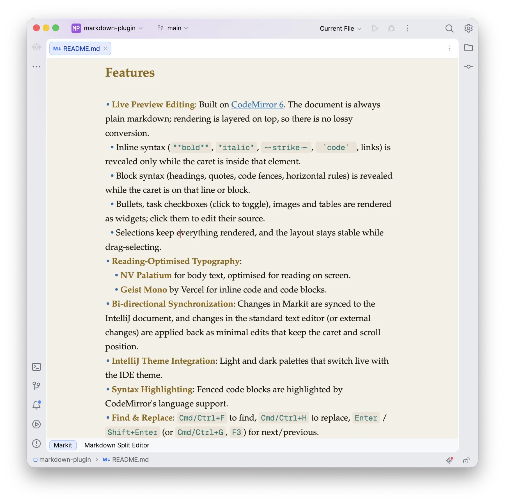
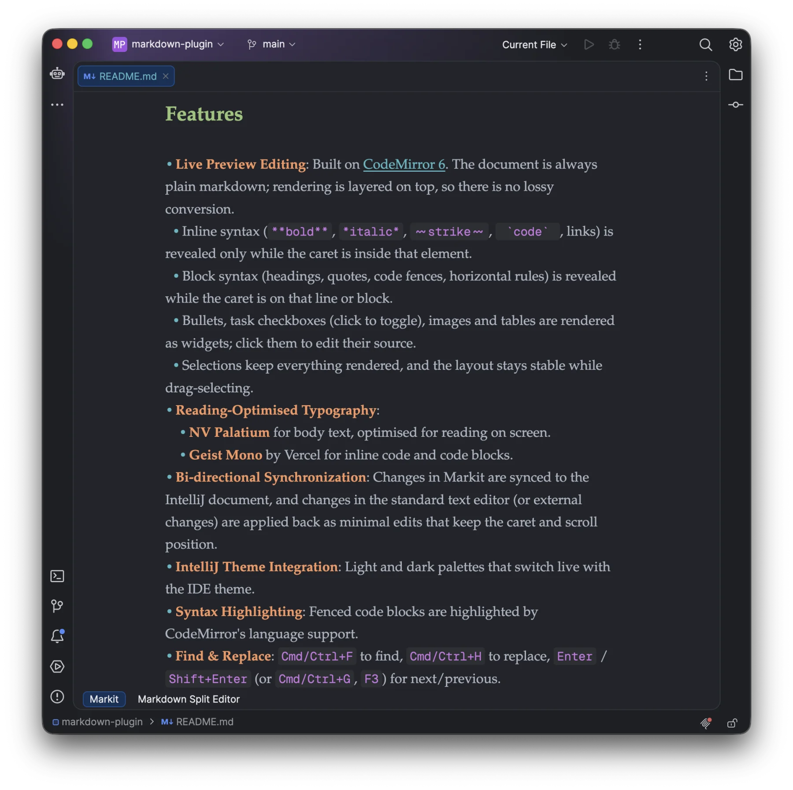

Write Markdown the way it reads.
A Typora-style live preview editor for JetBrains IDEs. The whole document renders in place, and the syntax under your caret appears only while you edit it.


DarkLightDrag to compare. Markit follows your IDE theme live.
Live preview editing
Headings, emphasis, links, lists, quotes, code, images and tables render in place. Click into an element to reveal its markdown.
Always plain Markdown
Built on CodeMirror 6. Rendering is layered on top of the source, so nothing is ever converted or lost.
Typography for reading
NV Palatium for prose and Geist Mono for code, tuned for long-form reading and writing.
Two-way sync
Edits flow between Markit and the standard text editor as minimal changes that keep your caret and scroll position.
Mermaid diagrams
mermaid code blocks render as themed diagrams, with a live preview while editing and an enlarged view.
Keyboard first
⌘B ⌘I ⌘E for formatting, find & replace, list continuation and Tab indenting.